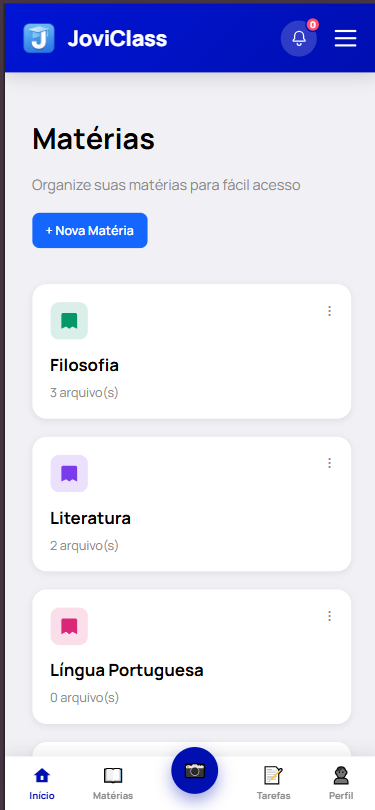
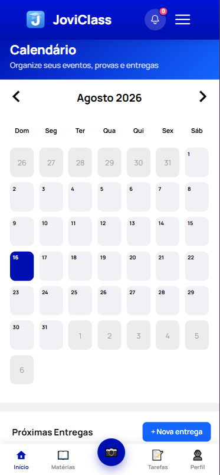
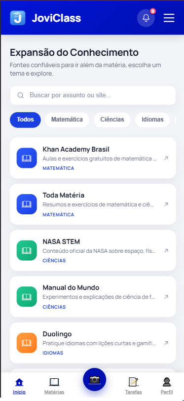
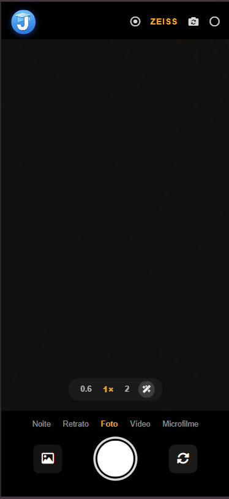
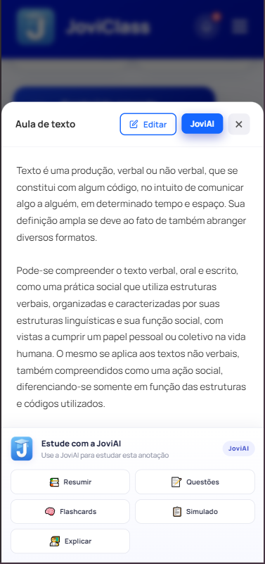
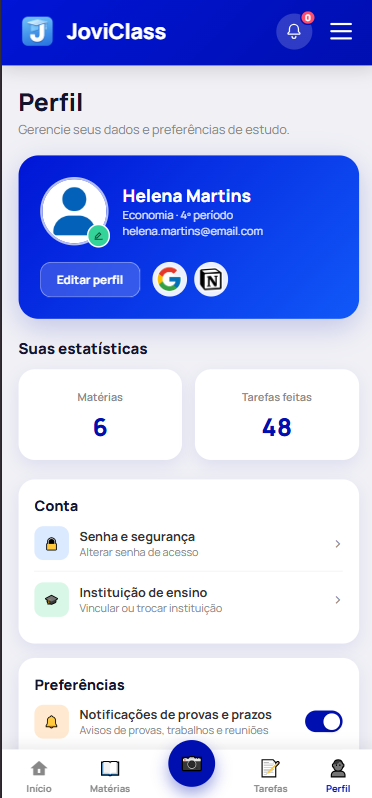
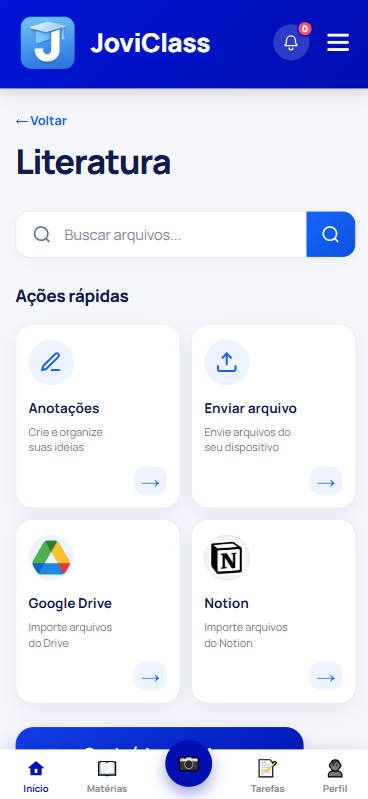

Estudar pode ser mais simples.
Nossa solução
O JoviClass nasceu a partir de um desafio simples: estudantes registram conteúdos importantes com a câmera do celular, mas acabam com uma galeria cheia de fotos difíceis de organizar, revisar e encontrar depois.
Nossa solução transforma a câmera do smartphone em uma ferramenta de apoio aos estudos. Com o JoviClass, o estudante pode organizar suas fotos por matérias, reunir conteúdos, criar arquivos e até transformar textos em áudio narrado, tornando o aprendizado mais prático e acessível.


Feito para quem aprende todos os dias.
Funcionalidades do JoviClass
• Capture
Registre aulas, exercícios, anotações e conteúdos importantes com a câmera.
• Organize
Separe suas imagens por matérias e mantenha tudo em seu devido lugar.
• Transforme
Reúna seus conteúdos e transforme suas fotos em arquivos como PDF, JPG ou DOCX.
• Narre
Utilize o recurso de conteúdo narrado para ouvir os textos presentes nas imagens.
• Compartilhe
Interaja com outros estudantes e compartilhe conhecimentos por meio das comunidades.
A rotina de estudos envolve uma grande quantidade de informações. Fotos de lousas, livros, exercícios e anotações acabam misturadas à galeria pessoal do celular, dificultando a organização e a revisão dos conteúdos.
O JoviClass conecta câmera, organização e estudo em um único espaço.
Entenda sobre nosso público-alvo.
Estudantes Universitários Full-Time
Feito para quem aprende, registra e precisa se organizar.
O JoviClass é voltado principalmente para estudantes do ensino médio, técnico e superior que utilizam o smartphone como ferramenta de apoio durante sua rotina acadêmica.
São estudantes que fotografam conteúdos apresentados em sala de aula, páginas de livros, exercícios, anotações, apresentações e outros materiais importantes, mas que muitas vezes acabam acumulando uma grande quantidade de imagens na galeria do celular.
Nosso público é formado por estudantes que:
- Utilizam o celular frequentemente para estudar e registrar conteúdos.
- Fotografam lousas, livros, exercícios, trabalhos e anotações.
- Têm dificuldade para encontrar posteriormente uma foto ou informação específica.
- Precisam conciliar estudos, trabalhos, provas e outras atividades.
O celular já faz parte da rotina dos estudantes. O JoviClass aproveita essa realidade e transforma a câmera do smartphone em uma aliada dos estudos, reunindo registro, organização e revisão em um único espaço.

Conheça o JoviClass.
Uma experiência criada para tornar a rotina de estudos mais organizada e prática. Conheça nossa galeria:

Câmera JOVI com o JoviClass habilitado para começar o fluxo

Inteligência Artificial integrada ao processo de estudo.

Tela de perfil do usuário, onde ele pode editar suas informações.

Página da matéria do aluno, onde vai estar todo o seu conteúdo.
Tenha a experiência do JoviClass na prática!
Fique a vontade para conhecer nossa interface (algumas funcionalidades não estão disponíveis neste protótipo, apenas no projeto oficial).
Quem está por trás do projeto?
Uma equipe apaixonada por tecnologia, criatividade e inovação.
Amanda Lourenço
Desenvolvimento de Sistemas e Estudante de Engenharia de SoftwareGiovanna Scalzone
Técnica de Informática e Estudante de Engenharia de SoftwareLetícia Brandão
Desenvolvimento de Software e Estudante de Engenharia de SoftwareNayra Duarte
Desenvolvimento de Sistemas e Estudante de Engenharia de SoftwarePaloma Dantas
Técnica de Informática e Estudante de Engenharia de SoftwareVamos transformar a forma de estudar?
Entre em contato com nossa equipe para conhecer mais sobre o JoviClass.
joviclass@email.com
São Paulo - SP